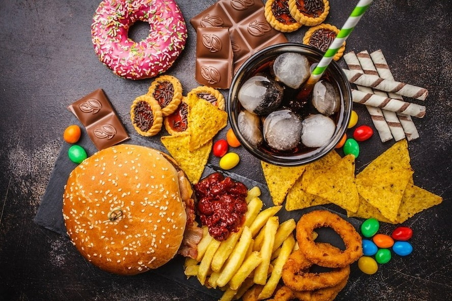

CONHECENDO OS ALIMENTOS:DO NATURAL AOS INDUSTRIALIZADOS

Os alimentos ultraprocessados são produtos industriais feitos a partir de ingredientes extraídos de alimentos ou produzidos em laboratório, com pouco ou nenhum alimento natural em sua composição. Eles passam por várias etapas de processamento e costumam receber aditivos como corantes, aromatizantes, conservantes, emulsificantes e muito açúcar, gordura ou sal para melhorar o sabor, a aparência e aumentar o tempo de conservação.
Diferente dos alimentos in natura ou minimamente processados — como frutas, verduras, arroz, feijão, ovos e carnes — os ultraprocessados geralmente são prontos para consumo e têm alta densidade calórica, mas baixo valor nutricional. Exemplos comuns incluem refrigerantes, salgadinhos de pacote, biscoitos recheados, macarrão instantâneo, embutidos, nuggets, cereais açucarados e refeições congeladas industrializadas.
O consumo frequente desses produtos está associado ao aumento do risco de obesidade, diabetes, hipertensão, doenças cardiovasculares e outros problemas de saúde. Isso acontece porque eles costumam conter grandes quantidades de açúcar, sódio e gorduras não saudáveis, além de estimularem o consumo excessivo devido ao sabor intenso e à praticidade
Apesar de serem convenientes e amplamente disponíveis, especialistas em nutrição recomendam que os ultraprocessados sejam consumidos com moderação. Uma alimentação baseada em alimentos frescos e preparações caseiras tende a oferecer mais nutrientes, fibras e benefícios para a saúde e para a qualidade de vida.
Alguns ingredientes artificiais e aditivos muito comuns em alimentos ultraprocessados são:
• Corantes artificiais • Aromatizantes artificiais • Conservantes químicos • Realçadores de sabor • Edulcorantes artificiais (adoçantes) • Emulsificantes • Espessantes • Estabilizantes • Antiumectantes • Acidulantes
• Glutamato monossódico (MSG) • Aspartame • Sucralose • Ciclamato de sódio • Sacarina • Nitrito de sódio • Nitrato de sódio
• Glutamato monossódico (MSG) • Aspartame • Sucralose • Ciclamato de sódio • Sacarina • Nitrito de sódio • Nitrato de sódio